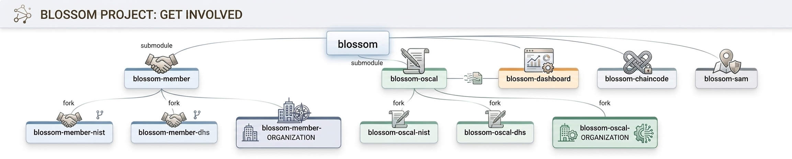

Help Shape the Future of BloSS@M
Whether you want to join the network, build new integrations, contribute code, or customize Blossom for your organization there's a place for you in the project. Explore the repositories below to get started, collaborate with the community, and help grow the Blossom ecosystem.

Explore the BloSS@M Ecosystem
The Blossom ecosystem is organized into focused repositories designed for different use cases and roles.
Start with the main blossom repository to access the core platform and its related submodules. Each repository can be used independently or together depending on your organization's needs, and all components are open for extension and customization through forking and contribution.
Click on and browse the repositories below to find the best place to get involved.
-
blossom-member
Tools and configuration for those that want to join an existing Blossom network as a participating member.
-
blossom-oscal
OSCAL-based content, automation, and supporting resources used by Blossom for assessments, user management, and compliance workflows.
-
blossom-dashboard
A dashboard for viewing network activity, exploring chain data, and managing or searching participating users.
-
blossom-chaincode and blossom-sam
Resources for those that want to deploy and manage their own Blossom blockchain network instead of joining an existing one.